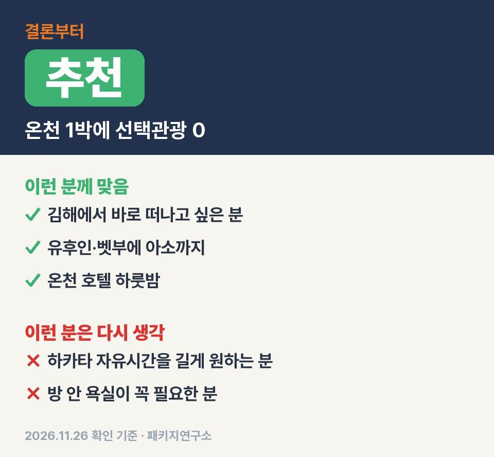
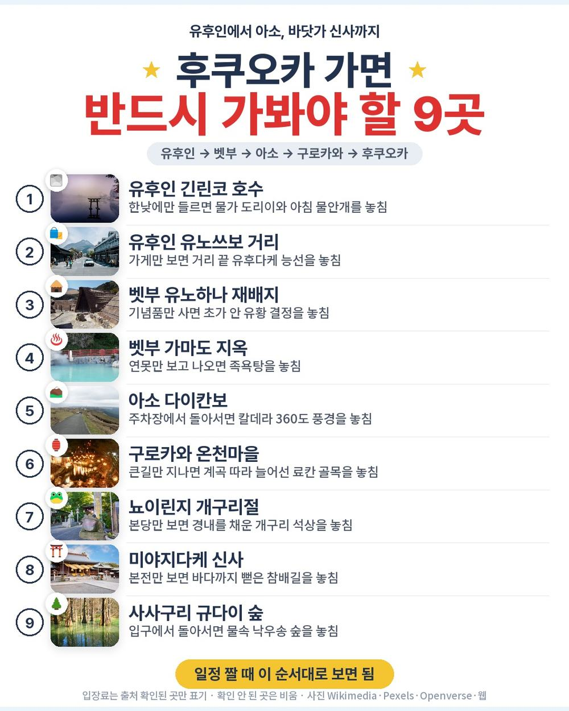
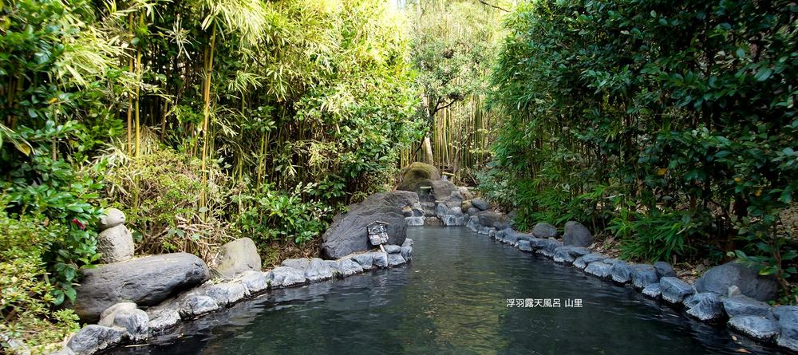
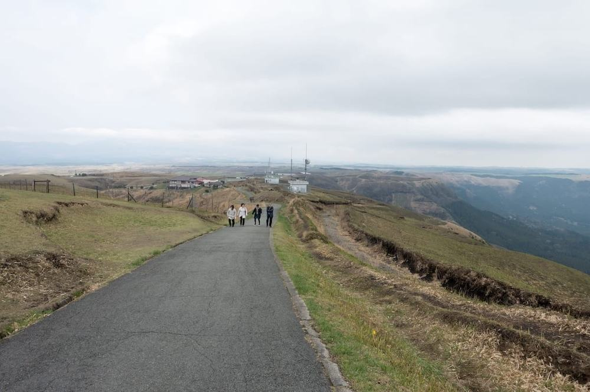
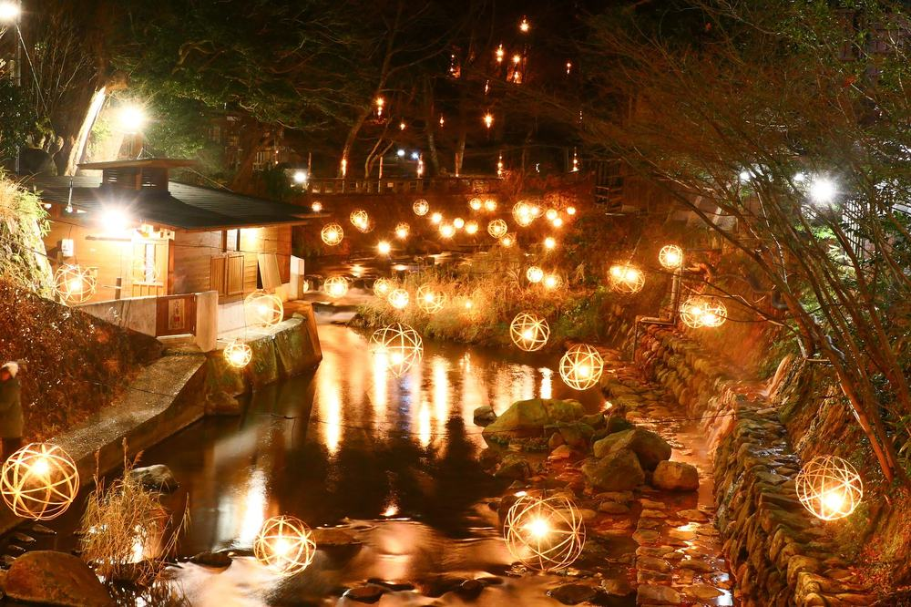

김해에서 오전 10시에 떠서 55분 만에 후쿠오카에 내리고 첫날 밤은 고코노에 산속 온천 호텔에서 자는 2박 3일임.
다녀온 후기가 아니라 노랑풍선 일정표와 포함·불포함 원문을 하나씩 따져 본 글임.
결론 — 추천. 에어부산 직항 왕복(아침 출발·저녁 귀국), 온천 호텔 1박 + 하카타 시내 호텔 1박, 식사 6번, 유후인·벳부·아소 다이칸보·구로카와·미야지다케가 95만 4천원 안에 있고 선택관광은 0. 다만 하카타 시내 자유시간을 길게 원하는 분은 다시 따져 볼 것.

오늘 기준 출발일별 요금 보기
https://naver.me/5nhzP2Ti

| 항목 | 내용 |
|---|---|
| 가격 | 1인 954,000원 (성인·소아 같음 · 12월 출발 기준) · 2인 1,908,000원 |
| 여행사 | 노랑풍선 |
| 항공 | 에어부산 직항 (BX505·BX516) · 갈 때 김해 10:00 → 후쿠오카 10:55 / 올 때 19:55 → 김해 21:00 |
| 숙소 | 고코노에 온천 호텔 1박(아마가세 우키하 호텔·호주야·유모토야 료칸 또는 동급 예정) + 호텔 WBF 그란데 하카타 1박(예정) |
| 일정 | 2박 3일 · 식사 6번 · 선택관광 0 · 쇼핑 1회 · 가이드·기사 경비 3만원 별도 |
▶ 내 출발일 오늘 기준 요금 확인 (제휴 링크 · 예약 시 수수료를 받으며 가격은 같습니다)
▶ 11월 26일 기준 후쿠오카 패키지 최저 54만 9천원부터 — 출발일별 값 한 화면에: 비교 페이지
| 번호 | 내용 | 한 줄 답 |
|---|---|---|
| 1 | 이 값에 들어 있는 것 | 온천 1박·선택관광 0 |
| 2 | 현장에서 더 낼 돈 | 2인 6만원 |
| 3 | 일정과 체력 | 첫날·둘째 날 버스 |
| 4 | 자유여행으로 짜면 | 항공값 조회 실패 |
| 5 | 맞는 분 · 안 맞는 분 | 3 대 2 |
아침에 떠나 저녁에 오는 직항 왕복에 호텔 두 밤, 식사 6번, 입장료와 보험까지 한 값임.
- 항공: 에어부산 김해–후쿠오카 직항 왕복, TAX 포함
- 숙소: 1일차 고코노에 온천 호텔(호텔식 저녁 뒤 온천욕), 2일차 하카타 시내 호텔
- 식사: 6번 — 현지식 점심 3, 호텔식 저녁 1, 호텔 조식 2
- 관광: 유후인 민예촌·긴린코, 벳부 유노하나·가마도 지옥(족욕), 아소 다이칸보, 구로카와, 뇨이린지, 미야지다케 신사, 규다이 숲, 모모치 해변, 라라포트
- 그 밖: 관광지 입장료, 여행자보험

선택관광은 하나도 없고 쇼핑은 마지막 날 면세점 한 번, 40분 정도임. 사흘 동안 온천 마을 두 곳에 칼데라 전망대까지 도는데 옵션 고를 일이 없다는 게 이 상품의 강점이라고 봄.
꼭 내는 돈은 가이드·기사 경비 1인 3만원이고 둘째 날 저녁값이 더해짐.
| 항목 | 금액 | 필수/선택 | 비고 |
|---|---|---|---|
| 가이드·기사 경비 | 6만원 | 필수 | 1인 3만원 · 성인·소아 같음 |
| 선택관광 | 0원 | — | 없음 |
| 2일차 저녁 | 직접 | 선택 | 하카타 시내 자유식 |
| 독실 | 12만원 | 선택 | 혼자 쓸 때 두 밤 기준 |
| 합계 (2인 필수분) | 6만원 | 상품가 2인 1,908,000원 별도 |
- 가이드 경비는 원화 금액으로 적혀 있음
- 유후인·구로카와 가게용 엔화 현금은 조금 챙기면 편함
버스는 유후인·벳부를 도는 첫날과 아소에서 후쿠오카로 오는 둘째 날에 몰림.
| 일차 | 가는 곳 | 버스 | 걷기 | 점심 · 저녁 |
|---|---|---|---|---|
| DAY 1 | 김해 10:00 → 후쿠오카 10:55 → 유후인 긴린코·민예촌 → 벳부 유노하나·가마도 지옥 → 고코노에 온천 호텔 | 원문에 시간 없음 | 보통 | 현지식 · 호텔식 |
| DAY 2 | 아소 다이칸보 → 구로카와 온천마을 → 뇨이린지 → 하카타 호텔 | 원문에 시간 없음 | 보통 | 현지식 · 자유식 |
| DAY 3 | 미야지다케 신사(약 1시간) → 규다이 숲(약 40분) → 모모치·라라포트 → 면세점 → 19:55 출발 | 약 2시간 | 보통 | 현지식 · 없음 |
- 김해공항 모임은 첫날 아침 7시 55분
- 규다이 숲은 연못 둘레 약 2km 산책로라 운동화가 필요하고 비 오면 오호리 공원으로 바뀔 수 있음
- 미야지다케 신사는 계단이 많음

마지막 날 비행기가 저녁 7시 55분이라 셋째 날도 저녁까지 일정이 이어짐. 이 상품 게시판 후기에서도 아소의 탁 트인 풍경이 시원했다는 말이 나옴. 12월 산간은 바람이 세니 두꺼운 겉옷은 꼭 넣을 것.
항공값을 오늘 조회하지 못해 합계는 안 냈고 직접 짤 때 따로 챙길 칸만 적음.
| 항목 | 금액 | 근거 |
|---|---|---|
| 김해–후쿠오카 직항 왕복 | 확인 못 함 | 2026-11-26 마이리얼트립 조회 실패 — 숫자를 지어내지 않음 |
| 온천 호텔 1박 + 시내 호텔 1박 | 확인 못 함 | 날짜·호텔마다 다름 |
| 식사 | 따로 | 패키지는 6번 포함 |
| 공항 이동 | 따로 | 패키지는 전용 버스 포함 |
| 유후인·벳부·아소·구로카와 이동 | 따로 | 패키지는 전용 버스 |
| 여행자보험 | 따로 | 패키지는 포함 |
| 가이드 | — | 자유여행은 없음 |
- 아소 다이칸보와 구로카와는 산간이라 대중교통으로 하루에 묶기 어려움
- 렌터카라면 운전하는 사람이 산길과 일정을 다 떠안게 됨
- 실값은 날짜를 정한 뒤 비교하는 게 정확함

걸리는 건 짧은 시내 자유시간과 방 밖 욕실 가능성이고 누구에게만 문제인지 분명함.
| 맞는 분 | 안 맞는 분 |
|---|---|
| 김해에서 바로 떠나고 싶은 부산·경남 분 | 하카타 시내 자유시간을 길게 원하는 분 |
| 유후인·벳부에 아소·구로카와까지 보려는 분 | 방 안 욕실이 꼭 필요한 분 |
| 온천 호텔 하룻밤을 원하는 분 |
이 상품 게시판엔 후기가 72개 있고, 가이드가 친절했다는 키워드가 가장 많이 붙어 있음. 하루 끝 온천욕이 좋았다는 말도 여럿이고 식사가 단조로웠다는 글도 보임. 온천 호텔은 방에 욕실이 없는 방으로 배정될 수 있다고 원문에 있으니 그땐 대욕장을 쓰면 됨.
Q. 후쿠오카 패키지 가격은 이 상품이 얼마인가요?
A. 12월 출발 기준 1인 95만 4천원, 2인 190만 8천원. 출발일마다 값이 달라서 날짜별로 확인해야 함.
Q. 후쿠오카 패키지 쇼핑은 몇 번인가요?
A. 마지막 날 면세점 한 번, 40분 정도임. 구매는 자유이고 선택관광은 없음.
Q. 가이드 경비는 따로 내나요?
A. 냄. 1인 3만원을 현지에서 냄. 성인·소아 같은 금액임.
김해에서 아침에 떠나 유후인·벳부에 아소 다이칸보와 구로카와까지 한 번에 도는 구성이 이 값의 이유임.
부산·경남에서 부모님 규슈 온천 여행을 알아보는 분께 특히 잘 맞음.
출발일에 따라 값이 달라서 가시려는 날짜 요금부터 확인하시면 됨.
오늘 기준 출발일별 요금 보기
https://naver.me/5nhzP2Ti
이 글에는 네이버 제휴 링크가 포함되어 있으며, 링크를 통해 예약하시면 일정 수수료를 받습니다. 가격은 동일합니다. 가격과 구성은 2026년 11월 26일 확인 기준이며 출발일에 따라 달라질 수 있습니다.
▶ 이 상품, 영상으로 보기 (유튜브)
▶ 후쿠오카 패키지 오늘 값 나란히 비교
▶ 같은 목적지 다른 여행사 패키지, 쇼핑·선택관광·가이드 경비까지 비교: pkg-lab.com